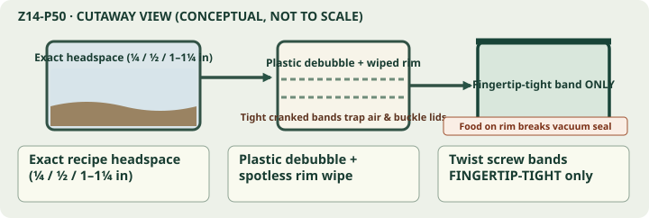

Z14-P50 · Food production and preservation · New manuscript
Control exact headspace, bubble removal, clean rims, and fingertip-tight bands
Prevent liquid siphoning, buckled lids, and trapped food debris that ruin vacuum seals during processing.
When it applies · Filling and closing every home-canned jar before loading into a boiling-water or pressure canner.
Equipment · Headspace measuring ruler, non-metallic plastic bubble-freer spatula, clean damp lint-free cloth (or vinegar-damp cloth for fatty foods), and screw bands.

Actions
- Leave the EXACT recipe-specified headspace (commonly ¼ inch for jams/jellies, ½ inch for fruits/tomatoes/pickles, and 1 to 1¼ inches for low-acid vegetables/meats)—too little headspace forces food under the lid sealing compound, while too much leaves excess air preventing a strong vacuum seal.[P09, P06]
- Slide a clean plastic/non-metallic bubble-remover tool (never metal knives that scratch glass and cause breakage) gently along jar walls to release trapped air pockets, then re-measure and top up liquid to exact headspace.[P09]
- Wipe every glass rim completely spotless with a clean damp cloth (use clean vinegar on the cloth for meats/broths to cut grease), center the new flat lid, and twist the screw band FINGERTIP-TIGHT ONLY—cranking rings down hard blocks escaping air during heating and buckles lids permanently.[P09]
Failure recognition · Cranking screw bands down as tightly as possible with both hands, causing lids to buckle upward and fail to seal in the canner.[P09]
Verify · Confirm exact recipe headspace re-checked after debubbling, spotless wiped rims, and fingertip-tight bands only.[P09]
Stop or change course · Food particles stuck on the sealing lip or buckled lids after processing mean the seal is compromised—refrigerate/reprocess within 24 hours per NCHFP rules.[P09, P10]
Evidence and editorial notes
- P06 · USDA / NCHFP · USDA Complete Guide to Home Canning (2015 / current NCHFP edition)
- Section: Complete Guide to Home Canning > Principle of Tested Protocols · Conditions: All residential home canning (boiling-water and pressure canning)
Support: Treat every USDA/NCHFP tested canning recipe as a single indivisible system: food pH, piece size, liquid viscosity, jar size, headspace, processing method, pressure/temperature, time, and altitude adjustment must all match the tested protocol.
Limitations: Adding extra starch, flour, oil, fats, or altering acid/low-acid ratios slows heat penetration and can cause lethal botulism. · Conflicting evidence: Directly prohibits online untested shortcuts and heirloom recipe alterations.
Editorial note: Foundational system-integrity rule across all Z14 canning cards. · Specialist reviewer: Food preservation process authority and Extension
Primary source · checked 2026-11-24 - P09 · NCHFP · Using Pressure Canners (current web edition)
- Section: Headspace, Jar Preparation, Two-Piece Lids, and Cooling Seals · Conditions: Mason-type canning jars with two-piece metal lids and screw bands
Support: Use true canning jars (never commercial mayonnaise jars), leave exact recipe headspace, remove trapped air bubbles, wipe jar rims clean, tighten bands fingertip-tight only, and let jars cool undisturbed 12–24 hours before checking vacuum seals and removing rings for storage.
Limitations: Inverting jars, tightening bands after cooling, or re-using flat sealing lids causes seal failure and silent spoilage. · Conflicting evidence: None; directly targets top home-canning mechanical failures.
Editorial note: Grounds jar-seal mechanics and inspection cards in Z14. · Specialist reviewer: Food preservation specialist
Primary source · checked 2026-11-24 - P10 · NCHFP · Identifying and Handling Spoiled Canned Food (current web edition)
- Section: Identifying and Handling Spoiled Canned Food · Conditions: Suspect home-canned food; identify sealed versus open or leaking without exposure
Support: Do not taste. Isolate from people and animals and use current NCHFP or local public-health disposal advice.
Limitations: A sealed lid alone cannot establish a safe process. Reprocessing a sound unsealed jar has separate conditions. Suspected exposure is P23. · Conflicting evidence: See A02 claim audit for boundaries.
Editorial note: Anchors spoilage inspection and safe disposal in Z14. · Specialist reviewer: Food microbiology and public health
Primary source · checked 2026-11-24
Source lineage · NCHFP Canning Preparation; new manuscript · Classification · New manuscript.